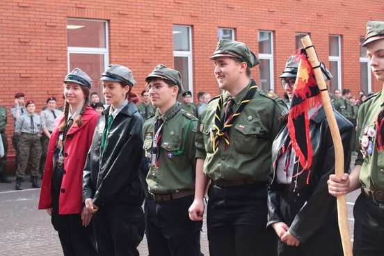
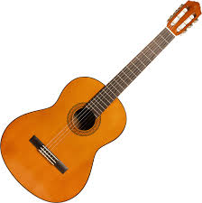

Scouting - been there since 2017
(Footage from Szczep ZHP Żabikowo fanpage!)
I met there some of the best people I could ever had.
It's a beautiful place that I would recomend for anybody!

Playing guitar - started almost a year ago.
My dad plays guitar since I can remember.
I started and now I can play and sing along with my friends!
Playing computer games
Now i don't play too much but I always did.
And will allways remember it!